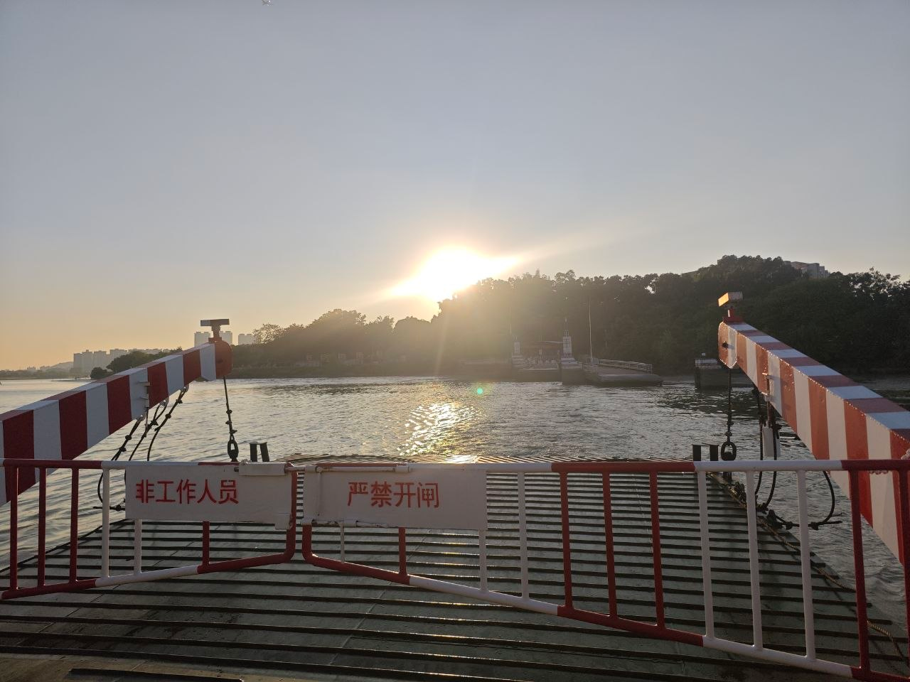
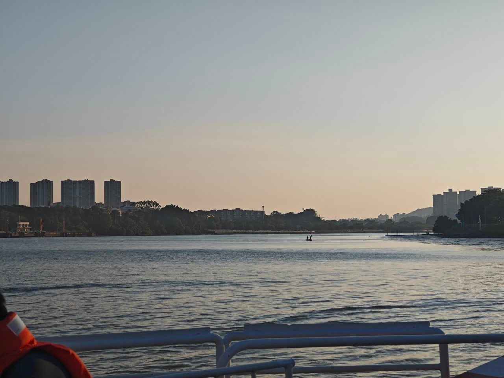
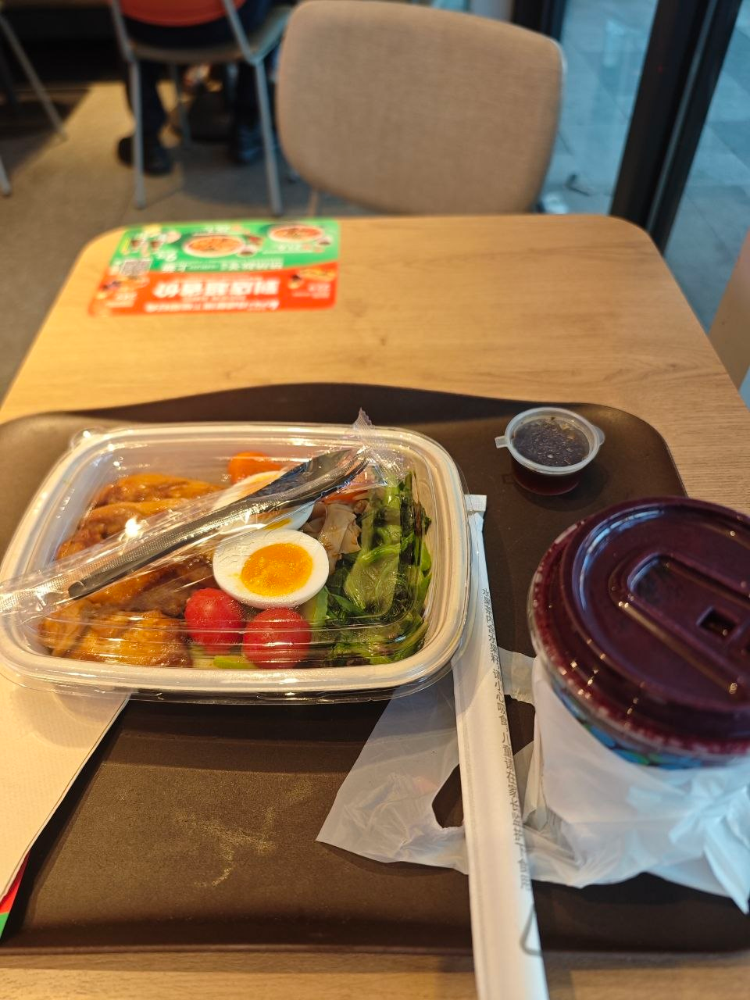
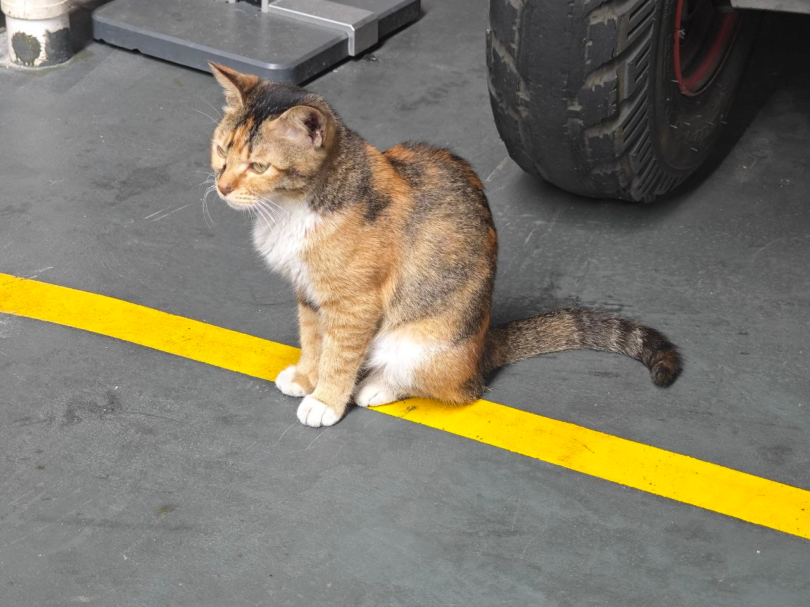
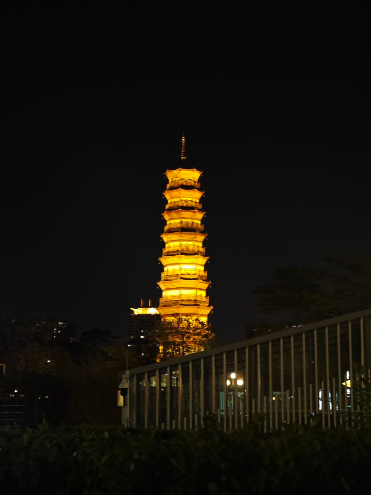
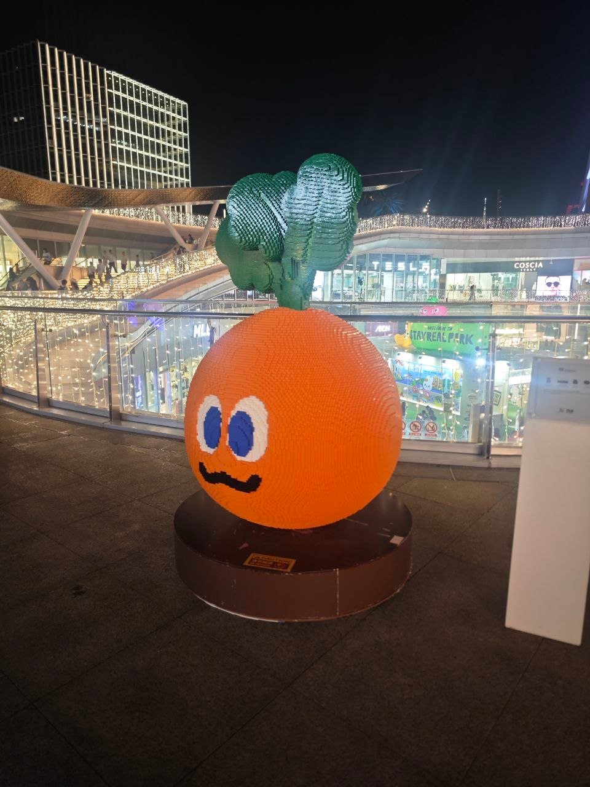
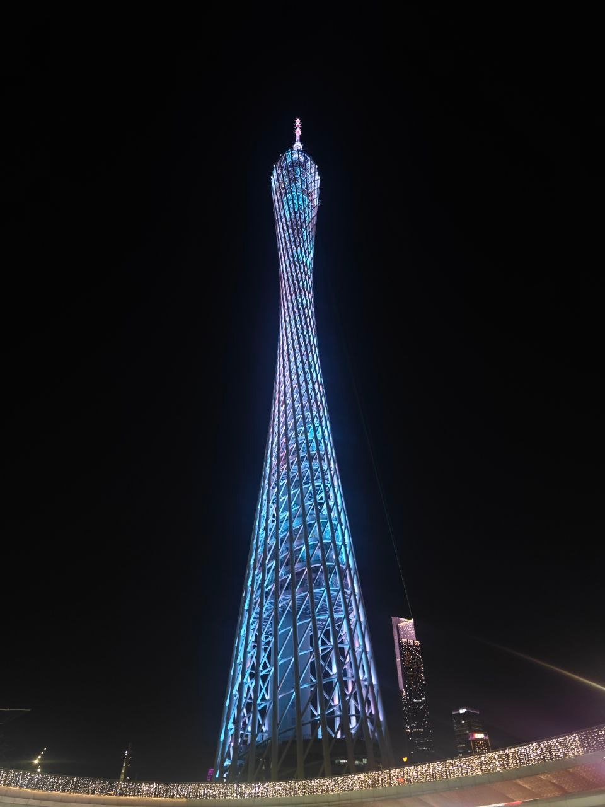
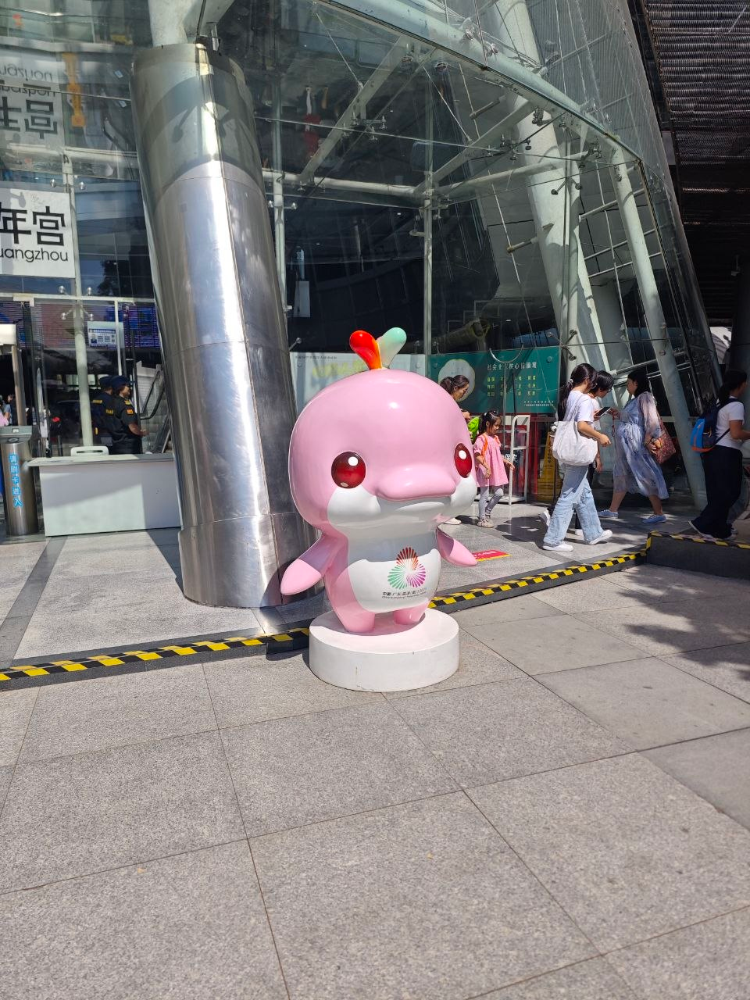
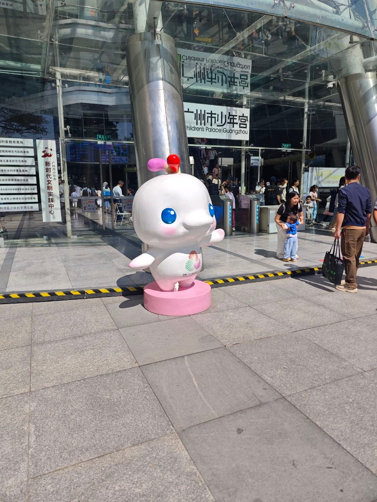

10.23 夜 游记
早上又翘课了, 中午很没精神, 下午上完数据库, 很饿, 中午没吃饭, 打算出去吃一顿顺便去逛逛
新造
去了新造吃 KFC, 跑得有点远, 不过乘坐了新造轮渡
河并不宽, 很快就过去了, 船上要穿救生衣, 甲板上有一条一条的类似钢筋的东西来卡住自行车啊电动车之类的


喝了奶昔, 感觉这东西需要摇啊, 我都忘了它叫 milkshake 了
不然就是很多的沉淀物, 感觉像糊糊, 不好吃

图书馆
之前没来过广州图书馆, 但是由于在 KFC 待得太久, 来到已经是 7:30, 有些晚了, 馆内人很少
先去了七楼, 大概都是一些自然科学的书, 走在其中就像在高中图书馆的时候一样放松, 看了看书名稍微记录了一些有点兴趣的技术
-
UEFI 编程
-
区块链相关技术
-
无线电通信相关的技术
-
电子, 电路相关的物理习题 (? )
-
医学方面的还有化学生物方面的
一样是有很多人在自习, 这倒和学校图书馆差别不大
话说我觉得学校图书馆不太能待的原因好像就是目的性太强了
给我的感觉是整栋楼并不大, 很快就能逛完, 功能很齐全, 但是没有什么太有趣的地方
人的感觉也是类似的, 很多和学校的图书馆并无二致
如果借了书可能会跑来还, 或者有什么活动也可以试试, 不然似乎没有再来的必要?
归途
回去的时候走到海心桥附近, 看见一只机械狗, 很有意思
它用脚上的四个轮子行动, 有四肢, 四肢都有关节
看着它的时候它好像能识别到, 会靠近你并打招呼 (大概是抖动四肢和晃动轮子这样子), 不过稍微不看着它就跑掉了ww
很喜欢, 感觉很有趣
(诶我居然没有拍下狗狗的照片)
拍了猫的 ()

然后本来想走到二沙岛的, 果然那条路还是太寂静了, 而且上次已经走过了
然后又走了一遍海心桥, 去了赤岗塔坐车回去了, 虽然这条路线也是走过的



次日
路过的少年宫


反正是周六不知道干什么, 昨晚发现了一些有趣的书, 本来想看看的, 今天不知道为何又全都没有兴趣了
最近精神状况不太对的
不知道为什么, 明明是感兴趣的新东西, 也有些惧怕学习耗费的大量精力
唉, 之前看过一篇文章说是 LLM 盛行的时代, 已经失去了这种试错的经验了, 更多成为了一种体验
详细的论述差不多忘了
社会科学和哲学方面的书最近也没看了, 尤其是思考过程让我感到痛苦, 可能是本能的趋利避害吧, 反正最近总是抑制着不去读相关的东西, 掩耳盗铃hh
不过看了也只是获得一种看法, 并不能有所改变什么的
我自己的路已经十分清楚了, 尽量地在压榨中把时间偷出来
我很讨厌以结果为导向的 LLM 使用, 但是如果工作中需要, 那么还是照做, 如果能因此获得更多的时间和金钱用于探索自己感兴趣的世界, 算是一笔不错的交易
但是果然还是要尽可能珍惜这一段全盛时期的光阴, 往后只能越来越衰败了
本来还想看看化学方面的书的, 但是被稍微有些功利的想法终止了, 不知道干嘛
我很讨厌功利的想法, 但是却不能完全阻止它的影响, 这样的
出来的目标好像是放松, 结果现在并没有...?
无论如何还是出来了, 我很讨厌学校, 学校里面没有什么值得我挂念的, 全是坏人和坏事